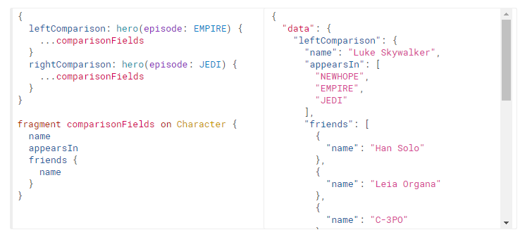
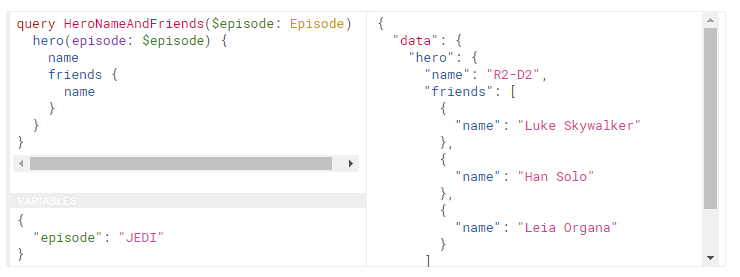

GraphQL offers many more advanced ways for querying data
 No duplicate code when using Fragments
No duplicate code when using Fragments
More options for inserting data when using Variables
Subscriptions to get updates on data changed from the Server

